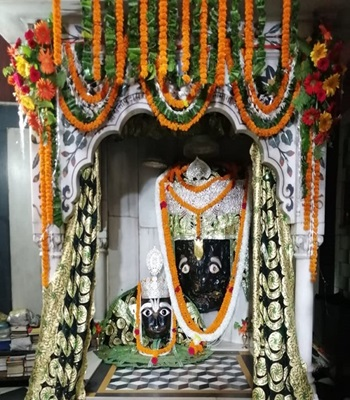
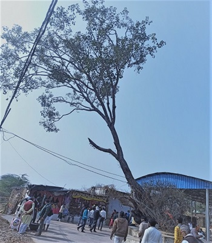
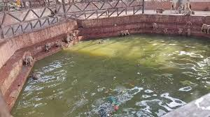
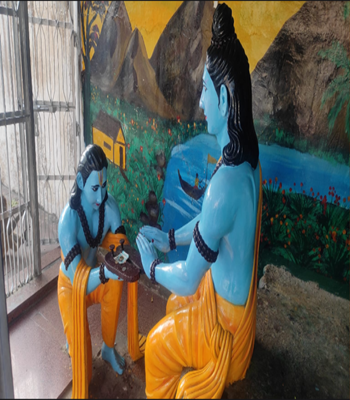
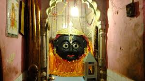

श्री कामदगिरि प्रदक्षिणा प्रमुख द्वार ट्रस्ट श्री चित्रकूट धाम
श्री कामदगिरि प्रदक्षिणा प्रमुख द्वार ट्रस्ट श्री चित्रकूट धाम
श्री कामदगिरि प्रदक्षिणा (परिक्रमा) के प्रमुख मंदिर
प्रदक्षिणा (परिक्रमा)
भारतीय उपासना पद्धति में उपासना के विभिन्न 16 चरण होते हैं। जिनमें से एक प्रदक्षिणा (परिक्रमा) भी होती है। प्रत्येक मंदिर की, तीर्थ की एवं देवी-देवताओं की परिक्रमा सुनिश्चित होती है। विशिष्ट तीर्थों में विभिन्न प्रकर की परिक्रमाएँ होती है, जैसे पंचकोसी परिक्रमा, 14 कोसी परिक्रमा, 84 कोसी परिक्रमा आदि। ब्रज क्षेत्र में गिरिराज गोवर्धन जी की परिक्रमा सात कोस की होती है। जबकि श्री चित्रकूट धाम में श्री कामदगिरि की परिक्रमा 5 किमी. लगभग पौने दो कोस की है। प्रतिदिन हजारों लोग श्री कामदगिरि की परिक्रमा करते हैं जबकि अमावस्या या विशेष पर्वों पर यह संख्या लाखों में होती है। श्री कामदगिरि का प्राचीन परिक्रमा मार्ग बुंदेलखंड के राजाओं द्वारा बनवाया गया था जो लगभग 3 फीट चौड़ा चूना पत्थर से निर्मित था। जिसका नवीनीकरण एवं सौंदर्यीकरण वर्तमान सरकारों ने समय-समय पर करवाया है। परिक्रमा पथ पर अनेक मठ एवं मंदिर विद्यमान हैं जिनका विवरण निम्नवत है-

(1)प्रमुख द्वार(उत्तर द्वार)
चित्रकूट तीर्थ का सबसे प्रमुख तीर्थ स्थल श्री कामदगिरि है और श्री कामदगिरि का प्रमुख तीर्थ प्रमुख द्वार है। उत्तर दिशा में स्थित द्वार को ही प्रमुख द्वार कहा जाता है।यहां पर श्री कामतानाथ भगवान के साथ-साथ श्री हनुमंत लाल जी के मुखारविंद के भी दर्शन होते हैं। कामतानाथ जी के ठीक वाम भाग में श्री राम दरबार (श्री राम झरोखा) के शुभ दर्शन हैं। इस स्थान पर कौशिल्या मंदिर, बद्रिकाश्रम ,लक्ष्मीनारायण मंदिर, शिव मंदिर, अष्टभुजा मांदुर्गा मंदिर, गोस्वामी तुलसीदास मंदिर एवं सद्गुरु समाधि मंदिर आदि अनेक मंदिरों की श्रंखला स्थित है। समस्त मंदिर समूह के व्यवस्था का संचालन उत्तरदाई ट्रस्टों के माध्यम से होता है। इस प्रमुख द्वार को चढ़ती पैकरमा के नाम से भी जाना जाता है। यहां लगभग डेढ़ सौ से दो सौ संत महात्मा , विद्यार्थी एवं कर्मचारी गण भगवत कार्यों में संलग्न रहते हैं।
(2)पूर्व द्वार मुखारविन्द (द्वितीय द्वार)
प्रमुख द्वार से थोड़ा आगे परिक्रमा पथ पर ही एक स्थान है; जहाँ पूर्वाभिमुखी मन्दिर में भगवान् श्री कामदानाथ जी की दो कृष्णवर्णी मूर्तियाँ विराजमान हैं। इनमें से एक को प्राकृतिक कहा जाता है और दूसरी अपेक्षाकृत लघु प्रतिमा भूतपूर्व पन्ना नरेश अमान सिंह द्वारा स्थापित बताई जाती है। इस प्रतिमा के मुख में सात शालिगराम विद्यमान हैं। भगवान् कामदानाथ के इस मन्दिर के पार्श्व में पन्ना-नरेश द्वारा स्थापित भगवान् श्रीरामचन्द्र जी की मूर्ति भी विराजमान है। इसी से मिला हुआ हनुमान् जी का मन्दिर है; जहाँ यात्रीगण कामनापूर्ति के लिए अर्जी लगाते हैं और उसकी पूर्ति पर इनकी पूजा-अर्चना करते हैं। यहाँ भगवान् कामदानाथ जी के मन्दिर के सामने चार कुंड बने हुए हैं। कामना-पूर्ति पर श्रद्धालु इन्हें अन्न से भर देते हैं। इस स्थान से स्वामी नरहरिदास जी के आश्रम के पीछे गोस्वामी तुलसीदास जी द्वारा रोपित पीपल के वृक्ष तक का परिक्रमा क्षेत्र 'सर्व सिद्ध क्षेत्र' कहलाता है।

(3) नरहरि दास भजन कुटी
महानतम तीर्थ श्री चित्रकूट धाम प्राचीन काल से ही ऋषियों मुनियों एवं संत महापुरुषों की पावन तपस्थली रहा है। इसी क्रम में भगवान श्री रामानंदाचार्य जी की शिष्य परंपरा में दीक्षित श्री नरहरि दास जी ने श्री कामदगिरि प्रदक्षिणा में दीर्घकाल तक साधना की है एवं भगवत साक्षात्कार का आनंद प्राप्त किया है। यह विशेष उल्लेखनीय है कि स्वामी नरहरि दास जी ही गोस्वामी तुलसी दास जी के अभिभावक एवं मार्गदर्शक सद्गुरु रहे हैं। इनकी भजन कुटी आज भी श्री चित्रकूट धाम की परिक्रमा में स्थित है।
(4) गोस्वामी तुलसी दास जी के द्वारा रोपित पीपल (अश्वत्थ) वृक्ष
स्वामी नरहरि दास जी की भजन कुटी के पृष्ठ भाग में स्थित जर्जर प्राचीन पीपल का वृक्ष आज भी गोस्वामी तुलसी दास जी के चित्रकूट आवास का साक्षी है। ऐसी मान्यता है कि इस वृक्ष का आरोपण स्वयं गोस्वामी तुलसीदास जी ने अपने कर कमलों से किया था।

(5) नवदुर्गा / साक्षीगोपाल
कामदगिरि की दक्षिण दिशा में रामानन्दी महानिर्वाणी अखाड़ा के थोड़ा आगे परिक्रमा पथ पर यह मन्दिर अवस्थित है। इसका निर्माण श्री राधा एवं भगवान् कृष्ण की आराधिका बरौंधा स्टेट की महारानी चन्द्र प्रभा कुंवरि की प्रेरणा से महाराज गया प्रसाद सिंह ने कराया था। यहाँ राधा-कृष्ण के विग्रह स्थापित हैं। माना जाता है कि कामदगिरि की परिक्रमा करने वाले का साक्ष्य देने के लिए वे साक्षी (साखी) के रूप में यहाँ विद्यमान हैं।इस मन्दिर की भित्तियों पर दाहिने हाथ की तर्जनी उंगली से सीताराम लिखने की परंपरा है।
(6) विरजा कुंड
पौराणिक मान्यताओं के अनुसार भगवान श्री हरि के प्रिय धाम श्री बैकुंठ धाम में पवित्र विरजा नदी विद्यमान है। जब भगवान श्री राम जी अपने वनवास काल में श्री चित्रकूट धाम पधारे तो उनके पुण्य दर्शनों के लिए विरजा नदी विरजा कुंड के रूप में श्री कामदगिरि की परिक्रमा में प्रकट हुईं। श्रद्धालु तीर्थयात्री आज भी उनके आचमन और दर्शन का लाभ प्राप्त करते हैं।

(7) श्री कामदगिरि दक्षिण द्वार(सुरा गऊ)
गिरिराज चित्रकूट की परिक्रमा के दक्षिणी भाग में यह द्वार स्थित है जिसे कामधेनु द्वार अथवा सुरभि गौ द्वार भी कहते हैं। ऐसी मानता है कि इस गुफा द्वार में अन्य द्वारों की अपेक्षा सबसे बाद तक प्रवेश संभव रहा है। कुछ सीढ़ियां चढ़कर गुफा द्वार पर गौ माता के दर्शन होते हैं। संतो के द्वारा ऐसा सुना जाता है कि यही सुरभि गौ माता अपने दूध से गिरिराज भगवान का अभिषेक करती थीं। वर्तमान में इस द्वार के कामधेनु मन्दिर में 'गो सेवा मिशन' बेनीवाल (पंजाब) के अध्यक्ष स्वामी कृष्णानन्द जी महाराज 'भूरीवालों' के द्वारा दिनांक 15/11/2016 से दिव्य गो ज्योति की स्थापना तथा अखण्ड हरिनाम संकीर्तन का कार्यक्रम संचालित है। जिसकी संपूर्ण व्यवस्था श्री कामदगिरि प्रमुख द्वार (उत्तर) ट्रस्ट के द्वारा की जाती है। अखंड हरिनाम संकीर्तन का उद्देश्य संपूर्ण विश्व कल्याण एवं गौ माता की सुरक्षा है।
(8) भरत मिलाप(चरण पादुका) मंदिर
यह स्थान कामदगिरि के दक्षिण भाग में परिक्रमा पथ पर अवस्थित है। मंदिर के विस्तृत प्राङ्गण में तीन छतरियाँ बनी हुई हैं, जिनके अंतर्गत पाषाण शिला पर प्रभु श्रीराम जी और भक्तशिरोमणि श्री भरतलाल जी के चरण चिन्ह अंकित हैं। यहां यह तथ्य सिद्ध होता है कि प्रेम की आंच से पत्थर भी पिघल सकते हैं तो यदि भगवान की भक्ति से किसी का ह्रदय ना पिघले तो ऐसा समझना चाहिए कि उस व्यक्ति का हृदय पत्थर से भी ज्यादा कठोर है। यहां पर आज भी भगवत भक्तों की भावसमाधि लगते देखा जाता है।

(9)लक्ष्मण पहाड़ी
श्री कामदगिरि के दक्षिण में लक्ष्मण पहाड़ी नाम की छोटी पहाड़ी है, जिसमें 100
से अधिक सीढ़ियां चढ़कर मंदिर में श्री लक्ष्मण जी के दर्शन होते हैं। कहा जाता है कि लक्ष्मण जी रात्रि
में भगवान राम और जानकी के शयन स्थान से कुछ दूर में, हाथ में धनुष वाण ले करके उनकी रक्षा के लिये
जागरण किया करते थे - जैसे कि मानस में उल्लेख है कि-
कछुक दूरि सजि बान सरासन।
जागन लगे बैठि बीरासन।।
लक्ष्मण पहाड़ी पर ही मंदिर के सामने एक कूप (कुआं) स्थित है। धरातल के स्तर से काफी ऊँचाई में स्थित
होने पर भी इसमें हमेशा जल परिपूर्ण रहता हैं। लक्ष्मण मंदिर के दर्शन हेतु रोपवे(उड़न खटोला) निर्मित
होकर चालू हो चुका है।
(10)श्री कामदगिरि तृतीय मुखारविन्द
यद्यपि श्री कामदगिरि प्रदक्षिणा का तृतीय दक्षिण द्वार कामधेनु द्वार है किंतु तृतीय मुखारविंद के दर्शन खोही में स्थित श्री कामतानाथ तृतीय मुखारविंद मंदिर में होते हैं जोकि लक्ष्मण पहाड़ी द्वार से थोड़ा आगे परिक्रमा पथ पर ही स्थित है। यह तृतीय मुखारविंद खोही निर्वाणी अखाड़ा के अंतर्गत आता है।

(11) सरयूधारा
भगवान श्रीराम जी की पावन जन्मभूमि श्री अवध धाम में प्रवाहित होने वाली पुण्य
सलिला माँ सरयू गुप्त रूप से प्रभु सेवा के लिए श्री कामदगिरि पर्वत पर प्रकट होती हैं। जिनके दर्शन
वर्षा ऋतू में एक धारा के रूप में सरयू धारा के नाम होते हैं। ऐसा कहा जाता है कि रसिक सम्प्रदाय के
महान संत श्री प्रयागदास जी (मामा जी) को यहीं पर भगवान श्री सीताराम जी के पावन दर्शन प्राप्त हुए थे।
परिक्रमा करते हुए श्रध्दालु तीर्थ यात्रियों के लिए आज भी ये पावन परंपरा विद्यमान है कि यहां कुछ क्षण
विश्राम करके फिर आगे परिक्रमा करनी चाहिए।
इस सम्बन्ध में एक दोहा लोक विश्रुत है-
कोटि कल्प काशी बसै, मथुरा कल्प सहास।
एक निमिष सरयू बसै, तुलै न तुलसीदास ।।
(12)पश्चिम चतुर्थ द्वार(चौथा फाटक)
पश्चिम दिशा में स्थित गुफ़ा के द्वार को पश्चिम चतुर्थ द्वार के नाम से जाना जाता है। यहां पर भगवान श्री राम दरबार के साथ ही कामतानाथ भगवान के चौथे मुखारविंद के दर्शन होते हैं। यह मंदिर परिक्रमा में स्थित कामता ग्राम के अंतर्गत आता है। यह स्थान सरयू धारा से कुछ आगे स्थित है।